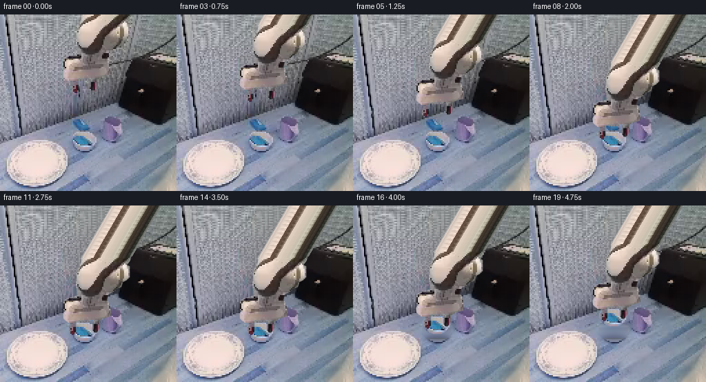
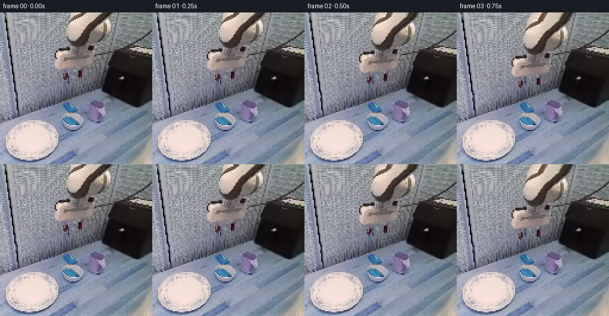

CODING AGENTS AS PIXEL WORLD MODELS
traex/GPT-6.1-Sol · common50_0043
点击播放 · 原生 RGB 像素
逐轮保存的候选
回放视频、检查图与代码变化。
每份候选均可单独播放。实际图片检查记录在下方工具轨迹中。
候选 01播放与检查图
点击播放 · 原生 RGB 像素


展开代码变化
--- 上一保存版本
+++ 本次保存版本
@@ -0,0 +1,140 @@
+from pathlib import Path
+import numpy as np
+from PIL import Image, ImageDraw, ImageFilter
+import artifact_io
+
+ROOT=Path(__file__).resolve().parent
+W=H=256
+
+def polygon_mask(points, size=(256,256), scale=4):
+ m=Image.new('L',(size[0]*scale,size[1]*scale))
+ ImageDraw.Draw(m).polygon([(round(x*scale),round(y*scale)) for x,y in points],fill=255)
+ return np.asarray(m.resize(size,Image.Resampling.LANCZOS),dtype=np.float32)/255
+
+def plate_fill(rgb, mask, donor_shift=64):
+ """Reconstruct the patterned work surface without a learned model.
+
+ A harmonic low-frequency estimate from the visible boundary is combined
+ with fine, same-frame work-surface texture. All untouched pixels are exact.
+ """
+ arr=rgb.astype(np.float32)
+ blur=np.asarray(Image.fromarray(rgb).filter(ImageFilter.GaussianBlur(3)),dtype=np.float32)
+ hole=mask>.015
+ # Let the boundary establish the local colour and illumination gradient.
+ low=blur.copy()
+ for y in range(H):
+ xs=np.flatnonzero(hole[y])
+ if not len(xs):continue
+ left=max(25,int(xs[0])-4); right=min(W-1,int(xs[-1])+4)
+ low[y,xs]=(blur[y,left][None,:]*(1-(xs-left)/(right-left))[:,None]
+ +blur[y,right][None,:]*((xs-left)/(right-left))[:,None])
+ for _ in range(650):
+ nei=(np.roll(low,1,0)+np.roll(low,-1,0)+np.roll(low,1,1)+np.roll(low,-1,1))*.25
+ nei[0]=(low[1]+np.roll(low[0],1,0)+np.roll(low[0],-1,0))/3
+ low[hole]=nei[hole]
+ # Noise and mat grooves are transferred from the same row of the mat.
+ yy,xx=np.mgrid[:H,:W]
+ sx=np.clip(xx-donor_shift,28,91)
+ residual=arr[yy,sx]-blur[yy,sx]
+ grain=np.clip(residual,-22,22)
+ repaired=np.clip(low+grain*.83,0,255)
+ a=mask[...,None]
+ return arr*(1-a)+repaired*a
+
+def warp(layer, dx, dy):
+ # Transparent photographic rigid sprite. No mesh or non-rigid warp.
+ return layer.transform((W,H),Image.Transform.AFFINE,
+ (1,0,-dx,0,1,100-dy),
+ resample=Image.Resampling.BICUBIC)
+
+def composite(base, sprite):
+ a=np.asarray(sprite,dtype=np.float32)
+ alpha=a[...,3:4]/255
+ return base*(1-alpha)+a[...,:3]*alpha
+
+def make_layer(rgb, mask):
+ a=np.zeros((H+100,W,4),dtype=np.uint8)
+ a[100:,:,:3]=rgb
+ a[100:,:,3]=np.rint(mask*255).astype(np.uint8)
+ return Image.fromarray(a,'RGBA')
+
+def main():
+ first=np.asarray(Image.open(ROOT/'first_frame.png').convert('RGB'))
+ # Exact visible-link silhouette and two independently actuated rigid jaws.
+ arm_outline=[(118,-2),(191,-2),(188,7),(184,12),(188,14),(188,30),
+ (184,34),(178,37),(176,44),(168,47),(164,51),(157,55),
+ (155,63),(158,67),(160,75),(161,82),(160,87),
+ (149,90),(143,94),(126,95),(117,95),(113,96),
+ (99,96),(95,93),(92,90),(91,84),(94,79),
+ (92,77),(92,66),(94,63),(98,60),(107,58),(112,56),
+ (111,47),(110,40),(111,30),(111,22),(115,14),(117,9)]
+ arm_mask=polygon_mask(arm_outline)
+ left_mask=polygon_mask([(105,94),(115,94),(114,100),(114,108),
+ (112,113),(108,114),(104,110),(104,103),(106,100)])
+ right_mask=polygon_mask([(131,92),(141,92),(141,103),(138,108),
+ (135,111),(131,109),(130,103)])
+ # Do not duplicate jaw pixels at the palm overlap.
+ arm_mask*=1-np.maximum(left_mask,right_mask)
+ union=np.maximum(arm_mask,np.maximum(left_mask,right_mask))
+ # A very narrow reconstruction margin removes static raster edge remnants.
+ expanded=np.asarray(Image.fromarray((union*255).astype(np.uint8)).filter(ImageFilter.MaxFilter(3)),dtype=np.float32)/255
+ clean=plate_fill(first,expanded)
+ arm=make_layer(first,arm_mask)
+ # Extend the cropped rigid upper link into its unseen continuation. It
+ # follows one fixed diagonal axis and uses the frame's own cross-section.
+ aa=np.asarray(arm).copy()
+ for y in range(100):
+ z=y-100
+ shift=-.58*z
+ for x in range(W):
+ sx=x-shift
+ if 118<=sx<=191:
+ # Extrapolate the same opaque cross-section along the beam.
+ xi=int(np.clip(round(sx),0,255))
+ c=first[0,xi].astype(float)
+ # The very small repeated surface detail is frame-derived.
+ tex=first[2*((-z)//2%3),xi].astype(float)-first[0,xi].astype(float)
+ c=np.clip(c+tex*.15,0,255)
+ aa[y,x,:3]=c.astype(np.uint8)
+ aa[y,x,3]=int(255*np.clip(min(sx-118,191-sx)+.5,0,1))
+ arm=Image.fromarray(aa,'RGBA')
+ left=make_layer(first,left_mask)
+ right=make_layer(first,right_mask)
+ # Small bowl: preserve the blue contents and the porcelain rim as one
+ # rigid unit, leaving the other blue material behind it stationary.
+ bowl_poly=[(109,169),(124,169),(132,171),(137,173),(141,177),
+ (142,182),(140,188),(135,192),(128,195),(116,195),
+ (108,192),(103,188),(101,183),(101,177),(103,172)]
+ bowl_mask=polygon_mask(bowl_poly)
+ bowl=make_layer(first,bowl_mask)
+ bowl_expanded=np.asarray(Image.fromarray((bowl_mask*255).astype(np.uint8)).filter(ImageFilter.MaxFilter(3)),dtype=np.float32)/255
+ # Here the donor is a nearby piece of blue-grey table rather than the
+ # light mat on the far left. Harmonic reconstruction keeps object edges.
+ no_bowl=plate_fill(np.rint(clean).astype(np.uint8),bowl_expanded,donor_shift=-30)
+ movement=[0,2.0,6.0,13.0,23.0,35.0,47.0,58.0,67.0,71.5,73.3,74.0,
+ 74.0,74.0,74.0,71.0,65.0,59.0,55.0,54.0]
+ openings=[0,.4,1.4,2.6,3.6,4,4,4,4,4,4,4,3,1.8,1.1,1.1,1.1,1.1,1.1,1.1]
+ frames=[first.copy()]
+ for i in range(1,20):
+ dy=movement[i]
+ lift=min(0,dy-74) if i>=15 else 0
+ # The bowl remains fixed until the jaws have physically closed.
+ bg=clean.copy() if not lift else no_bowl.copy()
+ if lift:
+ # Contact shadow remains on the table and softens with elevation.
+ sm=Image.new('L',(W,H)); d=ImageDraw.Draw(sm)
+ d.ellipse((105,188,140,197),fill=int(55*np.exp(lift/50)))
+ sh=np.asarray(sm.filter(ImageFilter.GaussianBlur(3)),dtype=np.float32)/255
+ bg*=1-sh[...,None]
+ bg=composite(bg,warp(bowl,0,lift))
+ # Rigid assembly translates on the vertical approach; tiny lateral
+ # registration is fixed, with no wobble or scale variation.
+ bg=composite(bg,warp(arm,0,dy))
+ bg=composite(bg,warp(left,-openings[i],dy))
+ bg=composite(bg,warp(right,openings[i],dy))
+ frames.append(np.clip(np.rint(bg),0,255).astype(np.uint8))
+ frames=np.stack(frames)
+ assert np.array_equal(frames[0],first)
+ artifact_io.save(frames,ROOT)
+
+if __name__=='__main__': main()
候选 02播放与检查图
点击播放 · 原生 RGB 像素
展开代码变化
--- 上一保存版本
+++ 本次保存版本
@@ -56,7 +56,7 @@
a=np.zeros((H+100,W,4),dtype=np.uint8)
a[100:,:,:3]=rgb
a[100:,:,3]=np.rint(mask*255).astype(np.uint8)
- return Image.fromarray(a,'RGBA')
+ return Image.fromarray(a)
def main():
first=np.asarray(Image.open(ROOT/'first_frame.png').convert('RGB'))
@@ -97,7 +97,7 @@
c=np.clip(c+tex*.15,0,255)
aa[y,x,:3]=c.astype(np.uint8)
aa[y,x,3]=int(255*np.clip(min(sx-118,191-sx)+.5,0,1))
- arm=Image.fromarray(aa,'RGBA')
+ arm=Image.fromarray(aa)
left=make_layer(first,left_mask)
right=make_layer(first,right_mask)
# Small bowl: preserve the blue contents and the porcelain rim as one
@@ -113,7 +113,7 @@
no_bowl=plate_fill(np.rint(clean).astype(np.uint8),bowl_expanded,donor_shift=-30)
movement=[0,2.0,6.0,13.0,23.0,35.0,47.0,58.0,67.0,71.5,73.3,74.0,
74.0,74.0,74.0,71.0,65.0,59.0,55.0,54.0]
- openings=[0,.4,1.4,2.6,3.6,4,4,4,4,4,4,4,3,1.8,1.1,1.1,1.1,1.1,1.1,1.1]
+ openings=[0,.6,1.8,3.4,5.5,8.0,11.0,14.0,15.0,15.0,15.0,15.0,13.5,11.5,10.0,10.0,10.0,10.0,10.0,10.0]
frames=[first.copy()]
for i in range(1,20):
dy=movement[i]
可观测工具轨迹
实际执行的命令与返回图片。
命令 1exit 0
/bin/bash -lc 'ls -la; cat prompt.txt; cat GENERATION_RULES.md'
命令 2exit 0
/bin/bash -lc "cat task_spec.json; cat artifact_io.py; python - <<'PY'
from PIL import Image
import numpy as np
im=np.array(Image.open('first_frame.png').convert('RGB'))
print(im.shape)
print('range',im.min((0,1)),im.max((0,1)))
a=im.reshape(-1,3); c,n=np.unique(a//16*16,axis=0,return_counts=True); ids=np.argsort(n)[-30:][::-1]
print(list(zip(c[ids].tolist(),n[ids].tolist())))
# 64x64 ascii based on approximate color
def sym(c):
r,g,b=map(int,c)
if max(c)-min(c)<18:
v=(r+g+b)//3
return ' ' if v>235 else '.' if v>200 else ':' if v>160 else '-' if v>115 else '=' if v>75 else '+' if v>40 else '#' if v>20 else '@'
if b>r*1.2 and b>g*1.1: return 'B'
if r>g*1.2 and r>b*1.2: return 'R'
if g>r*1.15 and g>b*1.1: return 'G'
if r>120 and g>100 and b<g*.8:return 'Y'
return '~'
small=np.array(Image.fromarray(im).resize((64,64)))
for row in small:print(''.join(sym(c) for c in row))
PY"命令 3exit 0
/bin/bash -lc "python - <<'PY'
from PIL import Image
import numpy as np
im=np.array(Image.open('first_frame.png'))
for y in range(0,256,8):
print(y,' '.join('%02x%02x%02x'%tuple(im[y,x]) for x in range(0,256,8)))
PY"命令 4exit 0
/bin/bash -lc "python - <<'PY'
from PIL import Image
import numpy as np
im=np.array(Image.open('first_frame.png').convert('RGB'))
# region overview high contrast hue: warm light = W, dark warm=d, neutral=N, cool=c, blue=B, white=O
for crop,step in [((70,0,190,148),2),((0,168,110,256),2)]:
x0,y0,x1,y1=crop
print('REGION',crop)
for y in range(y0,y1,step):
s=''
for x in range(x0,x1,step):
r,g,b=map(int,im[y,x]); v=(r+g+b)/3
if v<24: c='@'
elif v<50:c='#'
elif r>b+15: c='W' if v>170 else 'w' if v>100 else 'r'
elif b>r+25:c='B' if b>g+15 else 'b'
elif b>r+8:c='c'
elif v>220:c='O'
elif v>180:c='o'
elif v>145:c=':'
elif v>105:c='-'
elif v>70:c='='
else:c='+'
s+=c
print(f'{y:03d} '+s)
PY"命令 5exit 0
/bin/bash -lc "python - <<'PY'
from PIL import Image
import numpy as np
im=np.array(Image.open('first_frame.png')); im=np.array(Image.fromarray(im).resize((128,128),Image.Resampling.BOX))
chars=' .,:;i1tfLCG08@'
print('GRAY')
for row in im:
print(''.join(chars[min(13,int(c.mean()/256*14))] for c in row))
print('TARGET AREA RGB blocks x80:146 y132:204 step2')
a=np.array(Image.open('first_frame.png'))
for y in range(132,204,2):
line=[]
for x in range(80,146,2):
r,g,b=map(int,a[y,x]);
if b-r>25 and g-r>20: s='BB'
elif b-r>24:s='vv'
elif r-b>30:s='WW'
elif r-b>12:s='ww'
elif r>170 and g>170:s='oo'
elif r+g+b<130:s='##'
elif r+g+b<220:s='++'
elif r+g+b<340:s='=='
else:s='--'
line.append(s)
print(y,''.join(line))
PY"命令 6exit 0
/bin/bash -lc "python - <<'PY'
import numpy as np
from PIL import Image
im=np.array(Image.open('first_frame.png')).astype(int)
print('warm runs')
for y in range(0,118,2):
m=((im[y,:,0]-im[y,:,2]>7)&(im[y,:,0]>75));m[:85]=False;m[190:]=False
a=np.flatnonzero(m); ranges=np.split(a,np.flatnonzero(np.diff(a)>1)+1)
print(y,[(r[0],r[-1]) for r in ranges if len(r)>0])
print('bowl crop raw 2px pixels x100-144')
for y in range(148,194,2):
print(y,' '.join('%02x%02x%02x'%tuple(im[y,x]) for x in range(100,146,2)))
PY"命令 7exit 0
/bin/bash -lc "python - <<'PY'
import numpy as np
from PIL import Image
im=np.array(Image.open('first_frame.png')).astype(int)
for y in range(0,118,2):
s=''
for x in range(88,174,2):
r,g,b=im[y,x]; v=(r+g+b)/3
if v<20: c='@'
elif v<45:c='#'
elif r>b+7:c='W' if v>190 else 'O' if v>160 else 'o' if v>120 else 'w' if v>80 else 'r'
elif max(r,g,b)-min(r,g,b)<8:c='9' if v>190 else '8' if v>160 else '7' if v>135 else '6' if v>110 else '5' if v>80 else '4' if v>60 else '3'
else:c='.' if v>100 else ','
s+=c+' '
print(f'{y:3d} '+s)
PY"命令 8exit 0
/bin/bash -lc "cat > generate.py <<'PY'
from pathlib import Path
import numpy as np
from PIL import Image, ImageDraw, ImageFilter
import artifact_io
ROOT=Path(__file__).resolve().parent
W=H=256
def polygon_mask(points, size=(256,256), scale=4):
m=Image.new('L',(size[0]*scale,size[1]*scale))
ImageDraw.Draw(m).polygon([(round(x*scale),round(y*scale)) for x,y in points],fill=255)
return np.asarray(m.resize(size,Image.Resampling.LANCZOS),dtype=np.float32)/255
def plate_fill(rgb, mask, donor_shift=64):
\"\"\"Reconstruct the patterned work surface without a learned model.
A harmonic low-frequency estimate from the visible boundary is combined
with fine, same-frame work-surface texture. All untouched pixels are exact.
\"\"\"
arr=rgb.astype(np.float32)
blur=np.asarray(Image.fromarray(rgb).filter(ImageFilter.GaussianBlur(3)),dtype=np.float32)
hole=mask>.015
# Let the boundary establish the local colour and illumination gradient.
low=blur.copy()
for y in range(H):
xs=np.flatnonzero(hole[y])
if not len(xs):continue
left=max(25,int(xs[0])-4); right=min(W-1,int(xs[-1])+4)
low[y,xs]=(blur[y,left][None,:]*(1-(xs-left)/(right-left))[:,None]
+blur[y,right][None,:]*((xs-left)/(right-left))[:,None])
for _ in range(650):
nei=(np.roll(low,1,0)+np.roll(low,-1,0)+np.roll(low,1,1)+np.roll(low,-1,1))*.25
nei[0]=(low[1]+np.roll(low[0],1,0)+np.roll(low[0],-1,0))/3
low[hole]=nei[hole]
# Noise and mat grooves are transferred from the same row of the mat.
yy,xx=np.mgrid[:H,:W]
sx=np.clip(xx-donor_shift,28,91)
residual=arr[yy,sx]-blur[yy,sx]
grain=np.clip(residual,-22,22)
repaired=np.clip(low+grain*.83,0,255)
a=mask[...,None]
return arr*(1-a)+repaired*a
def warp(layer, dx, dy):
# Transparent photographic rigid sprite. No mesh or non-rigid warp.
return layer.transform((W,H),Image.Transform.AFFINE,
(1,0,-dx,0,1,100-dy),
resample=Image.Resampling.BICUBIC)
def composite(base, sprite):
a=np.asarray(sprite,dtype=np.float32)
alpha=a[...,3:4]/255
return base*(1-alpha)+a[...,:3]*alpha
def make_layer(rgb, mask):
a=np.zeros((H+100,W,4),dtype=np.uint8)
a[100:,:,:3]=rgb
a[100:,:,3]=np.rint(mask*255).astype(np.uint8)
return Image.fromarray(a,'RGBA')
def main():
first=np.asarray(Image.open(ROOT/'first_frame.png').convert('RGB'))
# Exact visible-link silhouette and two independently actuated rigid jaws.
arm_outline=[(118,-2),(191,-2),(188,7),(184,12),(188,14),(188,30),
(184,34),(178,37),(176,44),(168,47),(164,51),(157,55),
(155,63),(158,67),(160,75),(161,82),(160,87),
(149,90),(143,94),(126,95),(117,95),(113,96),
(99,96),(95,93),(92,90),(91,84),(94,79),
(92,77),(92,66),(94,63),(98,60),(107,58),(112,56),
(111,47),(110,40),(111,30),(111,22),(115,14),(117,9)]
arm_mask=polygon_mask(arm_outline)
left_mask=polygon_mask([(105,94),(115,94),(114,100),(114,108),
(112,113),(108,114),(104,110),(104,103),(106,100)])
right_mask=polygon_mask([(131,92),(141,92),(141,103),(138,108),
(135,111),(131,109),(130,103)])
# Do not duplicate jaw pixels at the palm overlap.
arm_mask*=1-np.maximum(left_mask,right_mask)
union=np.maximum(arm_mask,np.maximum(left_mask,right_mask))
# A very narrow reconstruction margin removes static raster edge remnants.
expanded=np.asarray(Image.fromarray((union*255).astype(np.uint8)).filter(ImageFilter.MaxFilter(3)),dtype=np.float32)/255
clean=plate_fill(first,expanded)
arm=make_layer(first,arm_mask)
# Extend the cropped rigid upper link into its unseen continuation. It
# follows one fixed diagonal axis and uses the frame's own cross-section.
aa=np.asarray(arm).copy()
for y in range(100):
z=y-100
shift=-.58*z
for x in range(W):
sx=x-shift
if 118<=sx<=191:
# Extrapolate the same opaque cross-section along the beam.
xi=int(np.clip(round(sx),0,255))
c=first[0,xi].astype(float)
# The very small repeated surface detail is frame-derived.
tex=first[2*((-z)//2%3),xi].astype(float)-first[0,xi].astype(float)
c=np.clip(c+tex*.15,0,255)
aa[y,x,:3]=c.astype(np.uint8)
aa[y,x,3]=int(255*np.clip(min(sx-118,191-sx)+.5,0,1))
arm=Image.fromarray(aa,'RGBA')
left=make_layer(first,left_mask)
right=make_layer(first,right_mask)
# Small bowl: preserve the blue contents and the porcelain rim as one
# rigid unit, leaving the other blue material behind it stationary.
bowl_poly=[(109,169),(124,169),(132,171),(137,173),(141,177),
(142,182),(140,188),(135,192),(128,195),(116,195),
(108,192),(103,188),(101,183),(101,177),(103,172)]
bowl_mask=polygon_mask(bowl_poly)
bowl=make_layer(first,bowl_mask)
bowl_expanded=np.asarray(Image.fromarray((bowl_mask*255).astype(np.uint8)).filter(ImageFilter.MaxFilter(3)),dtype=np.float32)/255
# Here the donor is a nearby piece of blue-grey table rather than the
# light mat on the far left. Harmonic reconstruction keeps object edges.
no_bowl=plate_fill(np.rint(clean).astype(np.uint8),bowl_expanded,donor_shift=-30)
movement=[0,2.0,6.0,13.0,23.0,35.0,47.0,58.0,67.0,71.5,73.3,74.0,
74.0,74.0,74.0,71.0,65.0,59.0,55.0,54.0]
openings=[0,.4,1.4,2.6,3.6,4,4,4,4,4,4,4,3,1.8,1.1,1.1,1.1,1.1,1.1,1.1]
frames=[first.copy()]
for i in range(1,20):
dy=movement[i]
lift=min(0,dy-74) if i>=15 else 0
# The bowl remains fixed until the jaws have physically closed.
bg=clean.copy() if not lift else no_bowl.copy()
if lift:
# Contact shadow remains on the table and softens with elevation.
sm=Image.new('L',(W,H)); d=ImageDraw.Draw(sm)
d.ellipse((105,188,140,197),fill=int(55*np.exp(lift/50)))
sh=np.asarray(sm.filter(ImageFilter.GaussianBlur(3)),dtype=np.float32)/255
bg*=1-sh[...,None]
bg=composite(bg,warp(bowl,0,lift))
# Rigid assembly translates on the vertical approach; tiny lateral
# registration is fixed, with no wobble or scale variation.
bg=composite(bg,warp(arm,0,dy))
bg=composite(bg,warp(left,-openings[i],dy))
bg=composite(bg,warp(right,openings[i],dy))
frames.append(np.clip(np.rint(bg),0,255).astype(np.uint8))
frames=np.stack(frames)
assert np.array_equal(frames[0],first)
artifact_io.save(frames,ROOT)
if __name__=='__main__': main()
PY
python generate.py"命令 9exit 0
/bin/bash -lc "python - <<'PY'
from PIL import Image
import numpy as np
for k in [0,1,7,12,19]:
a=np.array(Image.open(f'frames/{k:02d}.png')); s=np.array(Image.fromarray(a).resize((64,64)))
print('FRAME',k)
chars=' .:-=+*#%@'
for row in s:
print(''.join(chars[min(9,int(c.mean()/256*10))] for c in row))
print('frame metrics')
a=np.array([np.array(Image.open(f'frames/{i:02d}.png')) for i in range(20)]).astype(float)
for i in range(1,20):print(i,round(abs(a[i]-a[i-1]).mean(),3),np.count_nonzero(np.any(a[i]"'!=a[i-1],axis=2)))
PY'命令 10exit 0
/bin/bash -lc "python - <<'PY'
p='generate.py'
s=open(p).read().replace(\"Image.fromarray(a,'RGBA')\",\"Image.fromarray(a)\").replace(\"Image.fromarray(aa,'RGBA')\",\"Image.fromarray(aa)\")
s=s.replace('openings=[0,.4,1.4,2.6,3.6,4,4,4,4,4,4,4,3,1.8,1.1,1.1,1.1,1.1,1.1,1.1]', 'openings=[0,.6,1.8,3.4,5.5,8.0,11.0,14.0,15.0,15.0,15.0,15.0,13.5,11.5,10.0,10.0,10.0,10.0,10.0,10.0]')
open(p,'w').write(s)
PY
python generate.py
python - <<'PY'
import numpy as np
from PIL import Image
from pathlib import Path
first=np.array(Image.open('first_frame.png').convert('RGB'))
f=np.array([np.array(Image.open(f'frames/{i:02d}.png').convert('RGB')) for i in range(20)])
assert f.dtype==np.uint8 and f.shape==(20,256,256,3)
assert np.array_equal(f[0],first)
p=np.load('pixels.npz')['pixels']; assert p.shape==(256,256,20)
assert np.array_equal(p[:,:,0],(first[:,:,0].astype(np.uint32)<<16)|(first[:,:,1].astype(np.uint32)<<8)|first[:,:,2])
print('Validated:',f.shape,f.dtype,'exact initial frame, 20 frames @ 4 fps')
print('Upper corners remain fixed except where extended rigid beam enters:')
for region in [(0,80,0,170),(170,256,170,256)]:
x0,x1,y0,y1=region;print(region,np.max(np.abs(f[:,y0:y1,x0:x1].astype(int)-first[y0:y1,x0:x1].astype(int))))
print('Output files', [(str(x),x.stat().st_size) for x in [Path('pixels.npz'),Path('index.html')]])
PY"保存候选 2 份；完成命令 10 次；可验证图片返回 0 张。原始 API 响应与完整日志保留在本地。